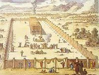

בעמוד זה (7)
אדר - להודות גם על הדברים הרעים
תשע"ה לחץ כאן להוריד עת העלון אדר - להודות גם על הדברים הרעים.pdf
אדר - חייב איניש לבסומי בפוריא
תשע"ו לחץ כאן להוריד את העלון - אדר - חייב איניש לבסומי בפוריא.pdf
אדר - ספר הזכרונות
תשע"ז
אדר - משביע לכל חי רצון
תשע"ח לחץ כאן להוריד את הקובץ אדר - משביע לכל חי רצון.pdf

אדר - מאה אדנים ומאה הודיות
תשע"ט אדר - מאה אדנים ומאה הודיות.pdf
אדר - שמחת פורים הכרת טובה
תש"פ לחץ כאן להוריד את הקובץ אדר - שמחת פורים הכרת טובה.pdf
אדר - שירת הפורים כיום הכיפורים
תשפ"א לכץ כאן להוריד את הקובץ אדר תשפ''א עברית.pdf